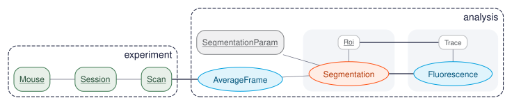

The Relational Workflow Model¶
The Relational Workflow Model interprets tables as workflow steps, rows as workflow artifacts, and foreign keys as execution order. The schema specifies not only what data exists but how it is derived — a single formal system in which data structure, computational dependencies, and integrity constraints are all queryable, enforceable, and machine-readable. This unification is what makes DataJoint a computational substrate rather than a database in the conventional sense. The worked example below shows the model in action; its place in the lineage of relational modeling follows.
A worked example¶
Diagrams in this documentation use the same notation as dj.Diagram in
datajoint-python: Manual tables are green rectangles, Lookup
tables are gray rectangles, Imported tables are blue ovals, and
Computed tables are red ovals. A Part table is a plain rectangle
grouped with its master inside a light box. Tier is conveyed by shape and
color, and edge thickness shows how a child relates to its parent — a
thick line means the child extends the parent (one per parent); a thin
line means the child is contained within the parent (many per parent).
Edges are drawn without
arrowheads, so direction is read from the layout. A diagram uses a
single orientation throughout — either left-to-right or top-to-bottom —
and which one is usually obvious at a glance. This one is left-to-right,
so every foreign key points from an upstream table on the left to the
downstream table that depends on it on the right (a top-to-bottom diagram
reads the same way, upstream at the top). The one
exception is a master–part group: a Part is drawn level with its
master rather than downstream of it, but a part's foreign key always
references its master, so the part is always downstream. They are placed
together because a master and its parts are always populated in a single
transaction. Tables are grouped into their schemas — the labeled
boxes — and dependencies cross schema boundaries freely. An underlined
name marks a new entity type — the table introduces a new key
attribute, a new schema dimension, so it holds many rows per parent —
while a plain name is composed from existing entities, extending one
or combining several, inheriting its whole key and adding no new
dimension. The legend below the figure keys the full notation.

![Legend: table tiers — Manual (green rectangle), Lookup (gray rectangle), Imported (blue oval), Computed (red oval), Part (smaller plain rectangle); an underlined name is a new entity type (a new schema dimension, many rows per parent) while a plain name is composed from existing entities (one row per parent); edge thickness — thick means the child extends the parent, thin means the child is contained within the parent; a dashed rounded box is a schema module (labeled in the corner); a gray box encloses a master with its parts; edges have no arrowheads, so direction follows the layout.](../../images/rwm-legend.svg)
The notation is specified in full in the Diagram specification. The concepts it depicts are explained in depth elsewhere: entity integrity (keys, entity types, and schema dimensions), master–part tables (the entity group and its all-or-nothing populate), the computation model (how make() produces Imported and Computed tables), and semantic matching (why a name means the same thing everywhere it appears).
The pipeline spans two schemas: experiment holds the raw, manually
entered tables, and analysis holds everything derived from them.
Mouse, Session, and Scan are Manual tables entered by the
experimenter. SegmentationParam is a Lookup table holding reference
parameter sets. AverageFrame is Imported — its make() reads the
TIFF identified by Scan (a dependency reaching across from experiment
into analysis) and stores the mean fluorescence frame.
Segmentation is Computed — its primary key fans in from both
AverageFrame and SegmentationParam, so every average frame is
segmented with every parameter set automatically; its Part table
Roi holds the individual regions found in each segmentation.
Fluorescence then extracts per-ROI time-series from each segmentation,
and its Part table Trace stores one trace per region — each Trace
row tied back to the Roi it measures. A master and its parts form one
entity, inserted and deleted together. No external scheduler is consulted:
the foreign-key graph dictates what may run, what must run first, and what
already exists. The pipeline DAG and the database schema are the same
object.
Three interpretations of the relational model¶
The relational model has historically admitted two interpretations. Codd's mathematical foundation (1970) views tables as logical predicates and rows as true propositions — rigorous but abstract. Chen's Entity-Relationship Model (1976) views tables as entity types or relationships — intuitive for domain modeling, but silent on how entities come into being. The Relational Workflow Model adds a third, the one the worked example above illustrates.
| Aspect | Mathematical (Codd) | Entity-Relationship (Chen) | Relational Workflow (DataJoint) |
|---|---|---|---|
| Core question | What functional dependencies exist? | What entity types exist? | When and how are entities created? |
| Table semantics | Logical predicate | Entity or relationship | Workflow step |
| Row semantics | True proposition | Entity instance | Workflow artifact |
| Foreign keys | Referential integrity | Relationship | Execution order |
| Computation | Not addressed | Not addressed | Declared in schema |
| Data lineage | Not addressed | Not addressed | Structural |
| Implementation gap | High | High | None |
A semantic interpretation, not a departure¶
The Relational Workflow Model layers a semantic interpretation on the classical relational model; it does not replace any of it. Tables, rows, primary and foreign keys, normalization, and the query algebra keep their classical meaning. The model adds four readings on top:
- Tables also represent workflow steps.
- Rows also represent workflow artifacts, traceable to their inputs.
- Foreign keys also prescribe execution order — the dependency graph is the pipeline DAG, enforced by the database.
- Computed and Imported tables carry their own
make()methods, declaring derivation logic in the schema itself rather than in an external workflow file.
Under this interpretation the schema becomes active. A row exists in a
Computed table if and only if its upstream key exists, its make() has
run, and its result satisfies the declared constraints. The schema is the
executable specification of the work.
The deliberate trade-off¶
DataJoint accepts tighter coupling deliberately, in exchange for one formal system that spans data structure, computation, dependencies, and integrity. See Comparison to Workflow Languages for the structural treatment — what file-based workflows and task orchestrators each offer, what each omits, and when to use them alongside DataJoint.
Substrate consequences¶
Because dependencies are declared before any computation runs, lineage
and reproducibility become properties of the substrate, not artifacts assembled
after the fact. Every row in Segmentation is reachable by foreign key
from the exact AverageFrame and SegmentationParam that produced it;
cascade deletes remove dependent results when their inputs become invalid.
Reproducibility is structural rather than retrofitted by audit: a computed
result cannot exist without its upstream entities, and the declared types
and constraints must hold. The model enforces what other systems merely
log. The lineage graph is already in the schema; mapping it to external
standards such as W3C PROV or OpenLineage is a translation, not a
reconstruction.
The same property makes the schema a shared contract between humans and the machines that increasingly collaborate with them. The schema is self-describing: an agent can introspect table structure, dependencies, and state programmatically. Operations are safe by default: invalid joins, type mismatches, and referential violations fail cleanly rather than corrupting data silently. The dependency graph is explicit: agents reason about execution order without implicit knowledge. Core operations are idempotent: retries on failure are without side effects. And all state — job status, computation progress, errors — is queryable, so the work is observable as it happens. These are the properties that let agents participate in scientific workflows with the same transactional guarantees that protect human-initiated work.
Beneath the model¶
The remaining sections detail the structural elements that make the model work in practice.
Workflow steps and table tiers¶
Tables are classified into tiers by data-entry mode:
| Tier | Role | make() |
|---|---|---|
| Manual | Rows entered at runtime from outside the pipeline (people, forms, instruments, imports) | No |
| Lookup | Reference rows defined in the schema itself via contents |
No |
| Imported | Reach out to data sources outside DataJoint (instruments, ELNs, external databases) | Yes |
| Computed | Derive their contents entirely from upstream DataJoint tables | Yes |
Imported and Computed tables define computations via make() methods. The
make() method specifies how each entity is derived — declared within the
table definition, not in an external workflow file.
Manual vs. Lookup¶
Manual and Lookup tables are both entry points — their rows are entered
rather than derived by a make() — but they differ in where the rows come
from:
- A Manual table's rows arrive at runtime, from outside the pipeline: a
person typing into a form, a LIMS, an instrument, or an import from another
system. Its contents are specific to a particular project or experiment and
differ from one deployment to the next. Manual tables are the pipeline's origin
points — e.g.
Mouse,Session,Scan. - A Lookup table's rows are part of the schema definition, declared in
code through the
contentsattribute and versioned alongside the table. Its contents are the same wherever the schema is deployed and change only when the code changes. Use it for reference values that belong to the pipeline's design: parameter sets, method definitions, controlled vocabularies, enumerations — e.g.SegmentationParam.
The quick test is where does a row come from? If it is fixed in the committed
schema (contents), it is a Lookup; if it arrives at runtime, it is a
Manual table. A common mistake is to use a Lookup for data that is actually
entered at runtime (for example, filled in through a dashboard form). If a
table's rows do not come from its committed contents, it belongs in the
Manual tier.
Because Lookup content lives in the code, changing it is a code change:
you edit contents and redeploy, so updates flow through the same
review-and-deploy (CI/CD) process as any other schema change — versioned and
reproducible across deployments. Manual content, by contrast, is entered at
runtime and never touches the codebase.
Master-part relationships¶
Master-part relationships declare transactional grouping directly in the schema. The master table represents the workflow step; part tables hold the items produced together. Insertions and deletions cascade as a unit, enforcing transactional semantics without application code.
Workflow normalization¶
"Every table represents an entity type created at a specific workflow step, and all attributes describe that entity as it exists at that step."
Classical normalization theory decomposes tables to eliminate redundancy
through normal forms based on functional dependencies. Entity normalization
asks whether each attribute describes the entity identified by the primary
key. Workflow normalization extends these principles with a temporal
dimension: each table's attributes must describe its entity as it exists
at the workflow step the table represents. A Session table holds
attributes known when the session is entered (date, experimenter,
subject); analysis parameters determined later belong in Computed tables
that depend on Session. The discipline prevents tables that accumulate
attributes from different workflow stages, obscuring lineage and
complicating updates.
Entity integrity¶
All data is represented as well-formed entity sets with primary keys identifying each entity uniquely. When upstream data is deleted, dependent results cascade-delete automatically — including associated objects in external storage. To correct errors, you delete, reinsert, and recompute, ensuring every result represents a consistent computation from valid inputs.
Query algebra and algebraic closure¶
DataJoint provides a five-operator algebra:
| Operator | Symbol | Purpose |
|---|---|---|
| Restrict | & |
Filter entities by attribute values or membership in other relations |
| Project | .proj() |
Select and rename attributes, compute derived values |
| Join | * |
Combine related entities across relations |
| Aggregate | .aggr() |
Group entities and compute summary statistics |
| Union | + |
Combine entity sets with compatible structure |
The algebra achieves algebraic closure: every operator produces a valid entity set with a well-defined primary key, enabling unlimited composition. This preservation of entity integrity — every query result is itself a proper entity set with clear identity — distinguishes DataJoint's algebra from SQL, where query results lack both a well-defined primary key and a clear entity type.
Two readings of the same schema¶
The classical relational reading and the workflow reading hold simultaneously — they are interpretive lenses on the same schema, not incompatible designs.
| Classical reading | Workflow reading |
|---|---|
| Tables store data | Tables represent workflow steps |
| Rows are records | Rows are workflow artifacts |
| Foreign keys enforce consistency | Foreign keys prescribe execution order |
| Updates modify state | Computations create new states |
| Schemas organize storage | Schemas specify pipelines |
| Queries retrieve data | Queries trace lineage |
Further reading¶
The Relational Workflow Model and its technical innovations are formally defined in Yatsenko & Nguyen, 2026, which also introduces the further substrate elements that build on it: object-augmented schemas, semantic matching by attribute lineage, an extensible type system, and distributed job coordination. DataJoint's schema definition language and query algebra were first formalized in Yatsenko et al., 2018.
See also¶
- Data Pipelines — table tiers, schema organization, and the DAG in practice
- Computation Model — the
make()contract,populate(), and the key source - Entity Integrity — primary keys and the three questions every table answers
- Normalization — entity normalization extended with a temporal dimension
- Query Algebra — the five-operator algebra with algebraic closure
- Semantic Matching — lineage-based join resolution
- Type System — extensible types with pluggable codecs
- Design Primary Keys and Model Relationships — choosing the keys that carry entity integrity and connecting entities with foreign keys
- Define Tables and Run Computations — declaring steps and executing them